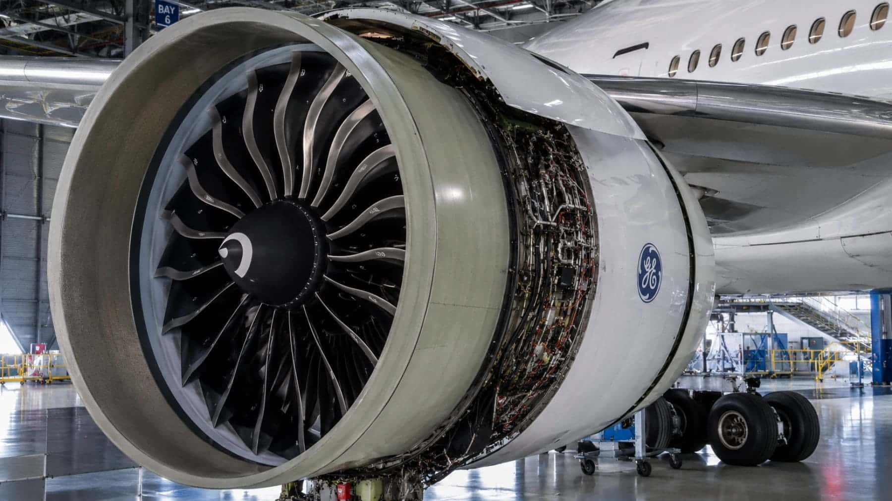

Evaluación Operativa de Sistemas Turbofan de Última Generación

Las nuevas arquitecturas de motores de alto índice de derivación (high-bypass turbofan) representan un salto cualitativo en la eficiencia termodinámica. Este análisis examina la integración de aleaciones de titanio-aluminio y materiales compuestos de matriz cerámica (CMC) que reducen el consumo específico de combustible en un 15% comparado con la generación anterior.